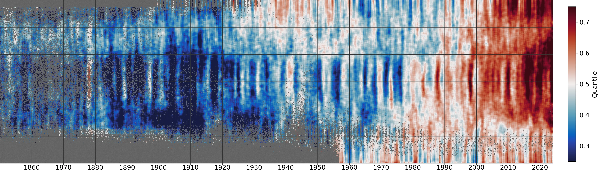
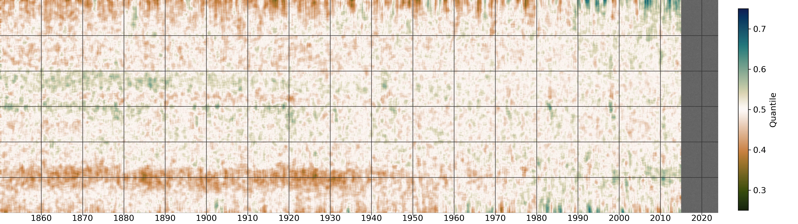
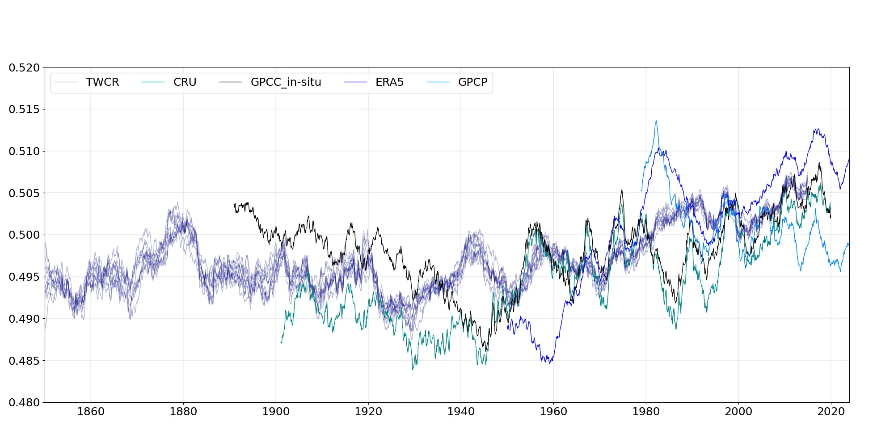
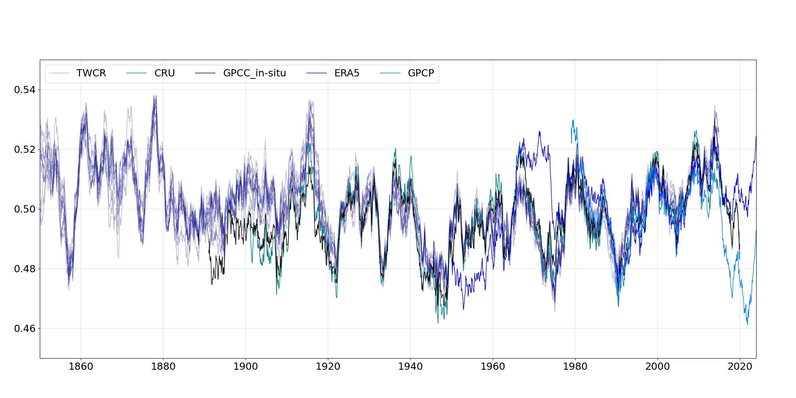
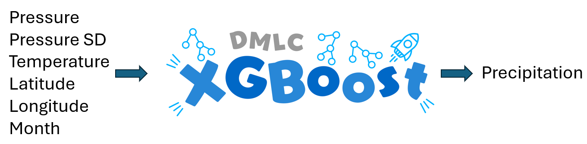
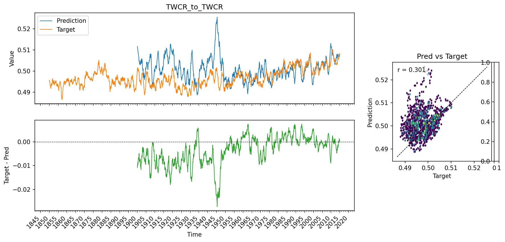

A Homogenized Precipitation Dataset¶
Precipitation is a difficult variable.
It’s not normally distributed, it has low space and time covariance, it’s very sensitive to orography (and so to data resolution), and its magnitude varies dramatically between regions and seasons. So let’s start from something easier - near-surface temperature anomaly, simply expressed:

Traditional climate stripes - global-mean, annual-mean temperature anomalies (w.r.t. 1961-90) from the HadCRUT5 dataset. (Figure source).¶
This is clear and powerful, but not very informative. It doesn’t show the spatial or seasonal structure of the data, and it doesn’t show any of the uncertainty or give insight into possible biases. To look at the data in more detail we can use the Extended Stripes:

Monthly temperature anomalies (w.r.t. 1961-90) from the HadCRUT5 dataset after regridding to a 0.25 degree latitude resolution. The vertical axis is latitude (South Pole at the bottom, North Pole at the top), and each pixel is from a randomly selected longitude and ensemble member. Grey areas show regions where HadCRUT5 has no data. (Figure source).¶
This version has sacrificed the beautiful simplicity of the original stripes, but it is enormously more informative. It shows the spatial and seasonal structure of the data, and it shows the places where observations are unavailable (the grey areas). This is starting to be useful for dataset construction and evaluation, but it’s still a bit noisy - in the extratropics there is a lot of high-frequency weather-driven variability, which makes it hard to see the underlying climate signal and any possible biases present. To get around this, one approach is to quantile-normalise the data before making the plot:

Same as the plot above, except that the data have been standardized to be normally distributed on the range 0-1 (approximately) at each grid-point, for each calendar month. (Normalization process, Figure source). This image has a slightly different colour map and spatial smoothing to the one above, so it looks a little different, but the underlying data are the same.¶
Standardized data has three advantages - interesting structure in the data stands out more clearly (for example the super-El-Nino of 1878, and the widespread cold period shortly after 1900), standardization is a requirement for modelling the data with Machine Learning tools, and we can make similar standardized plots from different base datasets, which makes it easier to compare them. And this brings us back to precipitation:

Same as the plot above, but for precipitation rate from the Twentieth Century Reanalysis (20CRv3) dataset. (Figure source).¶
The challenges of working with precipitation are immediately apparent. In the temperature plot, the data are dominated by strong signals (global warming, ENSO, the Early-20th-Century warming) with some contamination from biases and noise (the widespread cold at the beginning of the 20th Century, for example, is likely bias). In the precipitation plot, some signal is visible (the late-20th Century moistening, some ENSO features, …) but most of the visible signal is bias - the strong drying in the south is almost certainly a reflection of a sea-ice bias in the HadISST dataset, which is used as a boundary condition in 20CRv3, and the tropical shifts in the 19th Century are probably a result of model bias in the reanalysis showing up in places where there are too few pressure observations to constrain the reanalysis properly. (I’m not sure whether the shifts in the far north are real or not).
We can also see the problem of pervasive bias by comparing multiple precipitation datasets:

Global mean standardized precipitation rate from a range of datasets, including reanalyses, gridded observations, and a satellite-based dataset. (Figure source).¶

Same as the figure above, but a mean over the European region (35-65N, 15W-30E) instead of the global mean.¶

A decision tree model can be trained to estimate precipitation from relatively reliable surface fields.¶

Global mean standardized precipitation rate from 20CRv3, and as calculated from a decision tree model (Figure source).¶

Same as the plot above, but using a model trained to predict ERA5 precipitation using 20CRv3 temperature, pressure, wind and humidity (Figure source).¶
Appendices¶
Small print¶
This document is crown copyright (2024). It is published under the terms of the Open Government Licence. Source code included is published under the terms of the BSD licence.

{kind=link}
{kind=link}
{kind=link}
{kind=link}
{kind=link}
{kind=link}